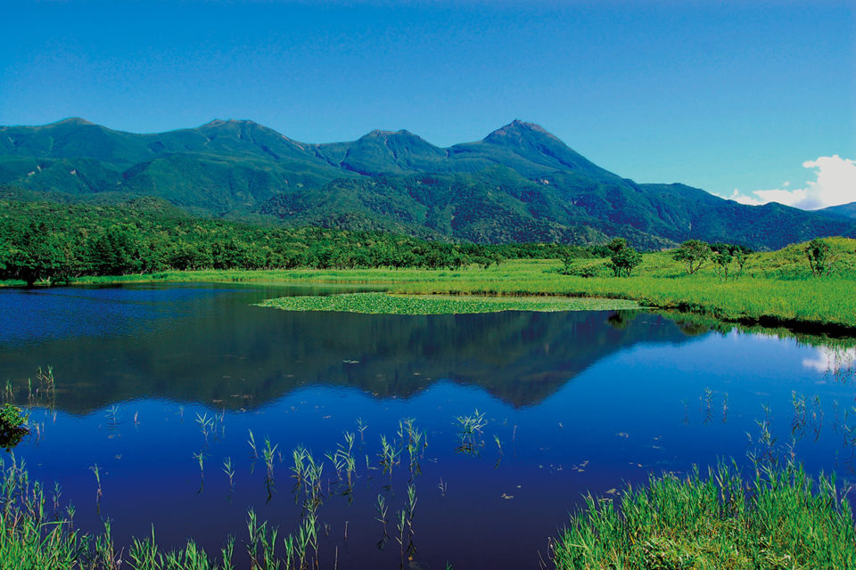
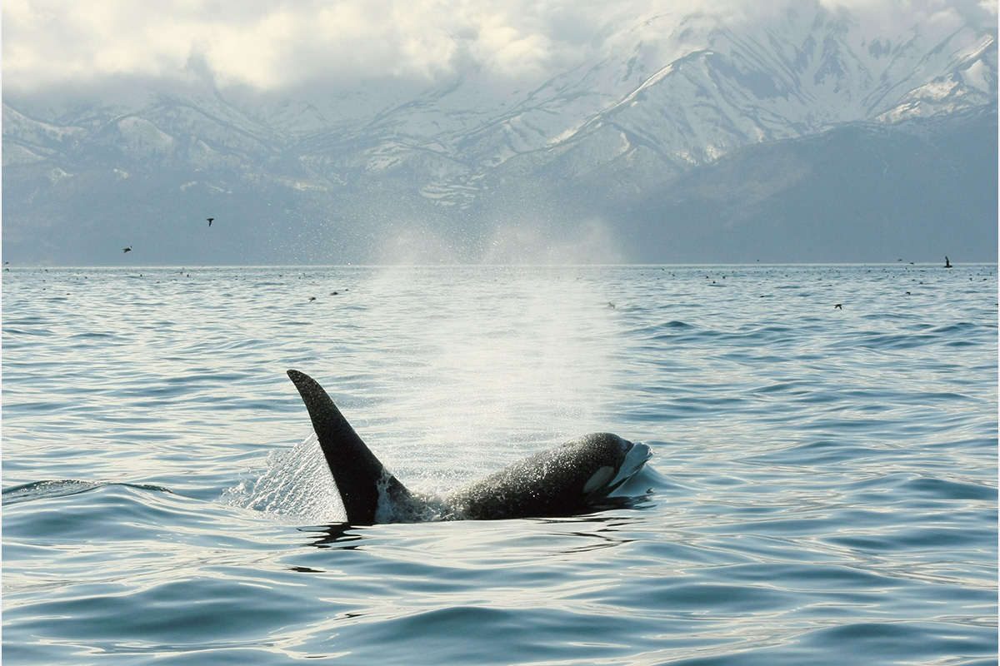
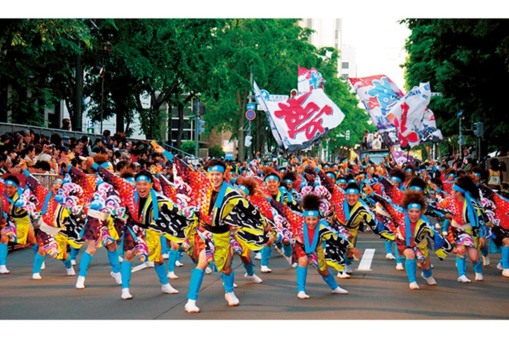
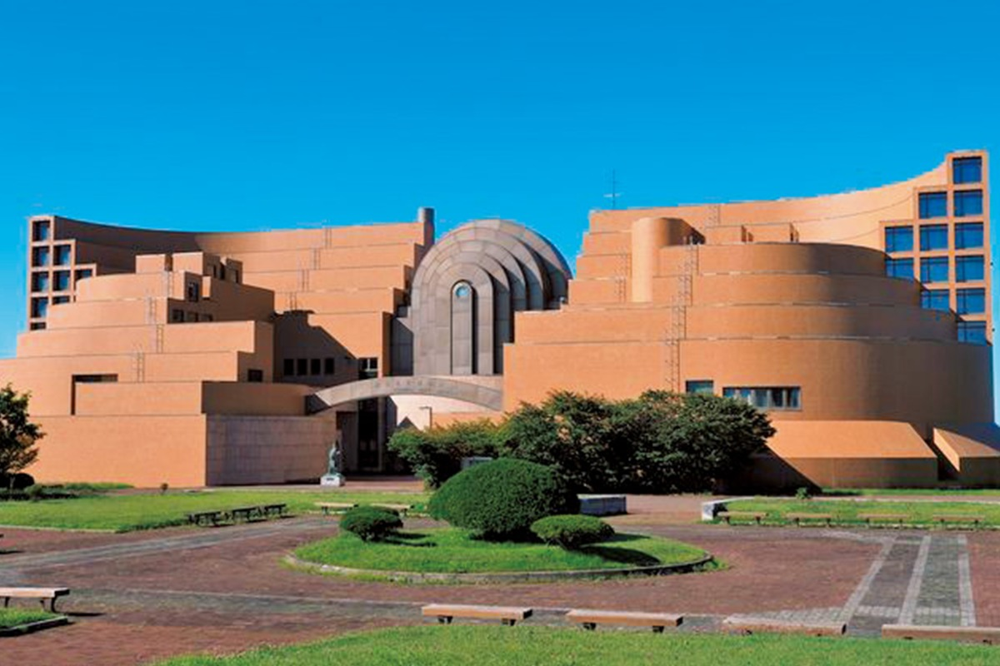
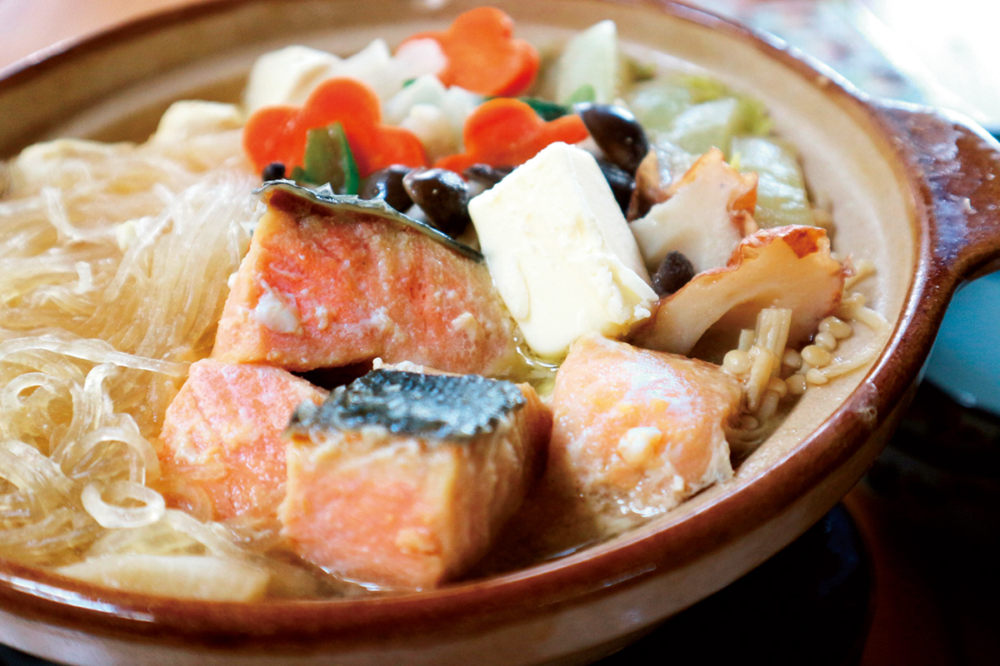
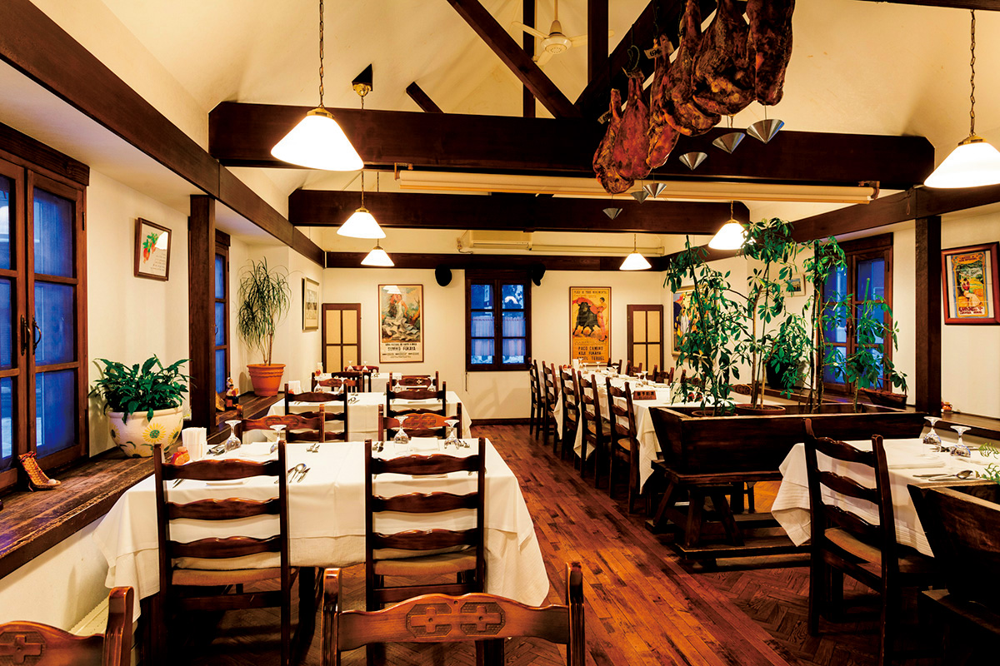
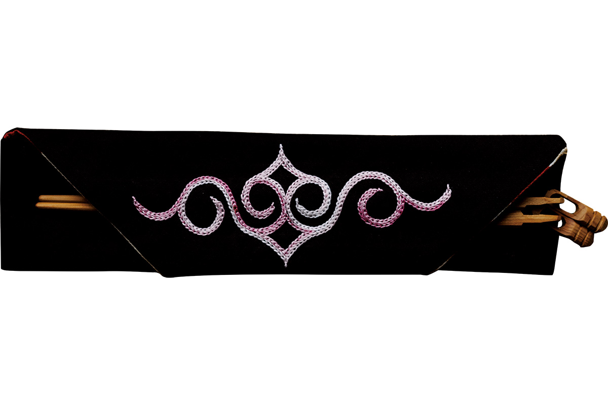
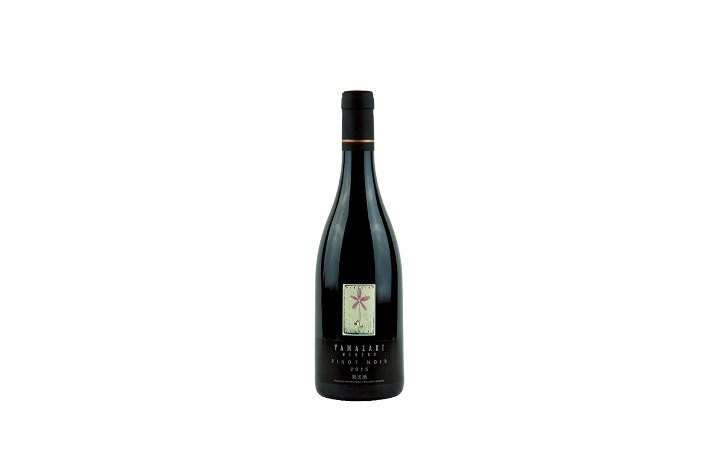
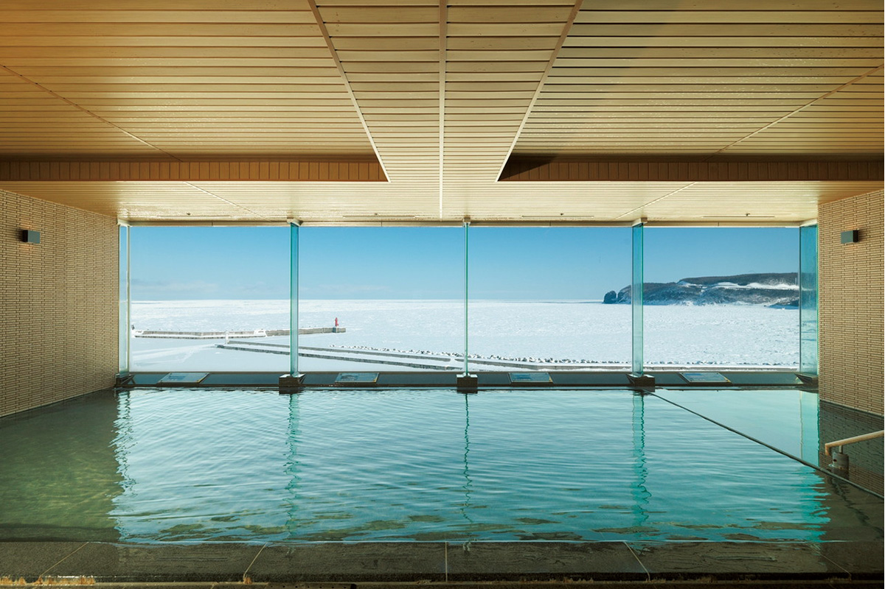

Префектура Хоккайдо
Хоккайдо: косатка у Раусу, культура айнов и 246 горячих источников

Горы полуострова Сирэтоко с ещё не стаявшим снегом отражаются в лесном озере.
На самом севере страны, где с четырёх сторон шумит вода, живут айны со своей культурой, а летом по улицам Саппоро идут танцевальные команды. Рассказываем, за чем ехать на Хоккайдо.
Карта: 123 места из 45 статей · все статьи о Хоккайдо
Карта
Хоккайдо на карте
123 места из наших статей о Хоккайдо: айнская деревня и природа озера Акан, Сиретоко, лето в Нисэко, Упопой в Сираой, вина Ёити, Отару, онсэны и сауны, дороги через перевалы и поля Токати. Нажмите на точку, чтобы открыть статью.
Пунктирный круг означает, что точка примерная: место находится в этом районе или на этом острове.
О префектуре
Край, который называли Эдзо
Хоккайдо лежит на самом севере страны, и с четырёх сторон его окружает вода: Тихий океан, Японское море и Охотское море. По площади это около двадцати двух процентов всей Японии, и раньше эти земли называли Эдзо. Здесь издавна жили айны, которые создали собственную культуру.
В эпоху Эдо краем управлял самурайский род Мацумаэ. После её окончания, в 1869 году, учредили ведомство по освоению земель, а Эдзо переименовали в Хоккайдо. Затем сюда пришли поселенцы из солдат, развивалось земледелие, и так сложилась основа здешнего сельского хозяйства. Но для общества и культуры айнов это обернулось тяжёлыми потерями, и многие обычаи были утрачены.
Сегодня в крае поддерживают быт айнов и сохранение их традиций. Двенадцатого июля открылся Упопои, центр, который рассказывает об айнах: здесь их культуру изучают и показывают сразу с нескольких сторон.
Что посмотреть
Косатка на расстоянии вытянутой руки
Косатка у Раусу
Полуостров Сирэтоко, внесённый в список всемирного природного наследия, тянется на восток, и у его восточного берега стоит город Раусу, место, где животный мир особенно богат. Если выйти в море на прогулочном судне, здесь можно увидеть диких косаток.

- Справки
- компания Shiretoko Nature Cruise
- Телефон
- +81 153-87-4001
Что ещё посмотреть
- Зоопарк Асахияма, зоопарк в Асахикаве с открытыми вольерами
- Национальный парк Сирэтоко, полуостров с медведями и водопадами
- Крепость Горёкаку, звездообразная крепость в Хакодате
Праздники
Два танца, сведённые в один
Праздник Ёсакои Соран
Этот праздник собрали из двух частей: танцевального праздника ёсакои и здешней песни рыбаков соран. Команды идут по городу одна за другой, и у каждой своя музыка, костюмы и рисунок движения, поэтому зрители стоят вдоль улицы до самого вечера.

- Период
- начало и середина июня
- Место
- парк Оодори и центральные кварталы Саппоро
Другие праздники
- Снежный фестиваль в Саппоро, зимние снежные и ледяные скульптуры
- Праздник дрейфующего льда, зимние шествия на северном берегу
- Шествие в Эсаси, осенний обряд у святилища Убагами
Музеи и архитектура
Дом в форме птицы с раскрытыми крыльями
Музей города Кусиро
Здание построили в 1983 году по проекту архитектора Кико Модзуна, который родился в самом Кусиро. Форма дома повторяет птицу: два крыла раскрыты в стороны, а вытянутая центральная часть читается как шея, поэтому здешний музей узнают по одной этой линии.

- Адрес
- 1-7 Shunkodai, Kushiro, Hokkaido
- Телефон
- +81 154-41-5809
Что ещё посмотреть
- Часовая башня Саппоро, старый деревянный дом с часами
- Бывшее управление Хоккайдо, кирпичное здание с красным фасадом
- Музей тюрьмы Абасири, старая тюремная постройка из брёвен
Местная кухня
Суп из лосося в глиняном горшке
Исикари-набэ
Этот суп варят на мисо, а в горшок кладут главное, то есть нарезанного кусками лосося вместе с хребтом и головой, а также тофу и овощи. В самом конце в суп добавляют немного молотого перца сансё, и это меняет вкус всей похлёбки.

Что ещё попробовать
- Дзингисукан, баранина на выпуклой жаровне
- Имомоти, лепёшки из тёртого картофеля
- Кальмаровые шумай, паровые пельмени с кальмаром
Где поесть
Испанский подвал на севере
Ресторан «Баск»
Шеф учился в Испании и, вернувшись, открыл в 1981 году этот ресторан, где готовят кухню басков. Кроме обычных ужинов здесь устраивают «барную улицу», когда гости вечером переходят из одного заведения в другое.

- Адрес
- 1-4 Shoin-cho, Hakodate, Hokkaido
- Телефон
- +81 138-56-1570
- Часы
- с 11:30 до 14:30 и с 17:00 до 21:30, в воскресенье до 21:00
- Выходные
- среда
- Сайт
- vascu.com
Ремёсла
Узор айнов на тёмном сукне
Мастерские Акан-айну-котан
В деревне у озера Акан рядом работают резчики по дереву, в том числе те, кого знают далеко за пределами края. Здесь же продают вещи с узором айнов: шитьё по тёмному сукну, вырезанную из дерева посуду и мелкие предметы для дома.

- Справки
- магазин народных вещей Chinita
- Телефон
- +81 154-67-2413
Что привезти
Вино с холмов Микасы
Вино завода Ямадзаки
Виноград здесь растёт на холмах города Микаса, и там же его превращают в вино. Хозяйство семейное, поэтому вина выпускают ограниченными партиями, а бутылка стоит от 2500 иен.

- Телефон
- +81 1267-4-4410
Где остановиться
Купель, из которой видно море
Гостиница «Китакобуси» в Сирэтоко
Отель стоит у самого Охотского моря, и из окон видно, как мимо идут рыбацкие и прогулочные суда. Зимой прямо с берега открывается поле дрейфующего льда, и гости приезжают сюда ради этого вида.

- Адрес
- 172 Utoro-higashi, Shari, Hokkaido
- Телефон
- +81 152-24-2021
- Комнат
- 180, из них 32 в западном крыле
- Цена
- от 17 670 иен за ночь с двумя приёмами пищи, налоги и банный сбор отдельно
- Сайт
- shiretoko.co.jp
Местный диалект
Как здесь говорят «очень вкусно»
- намара, умайсёочень вкусно
- сибарэру наочень холодно
- дзёппин карузапереть дверь
- ситаккэ нэдо встречи
Рекорды
В чём Хоккайдо первый
- №1 доля и сбор сахарной свёклы: первое место в стране
- №1 площадь лесов: первое место
- №1 источники Ноборибэцу: первое место среди всех на Хоккайдо
Вопросы и ответы
Что ещё спрашивают о Хоккайдо
Какой город получил имя в честь места, откуда приехали переселенцы?
Китахиросима. В эпоху Мэйдзи люди, приехавшие осваивать землю, назвали новое место по своей родине, и так появилось это имя. Кроме него на Хоккайдо есть районы с именами других префектур.
Какая еда здесь любима сильнее, чем рамэн?
Якисоба-бэнто, лапша в чашке с соусом, которую выпускает известная компания и продают только на Хоккайдо. По доле на рынке лапши в чашке остров сильно опережает остальных, а местные зовут её коротко «якибэн».
Справочник
Хоккайдо в цифрах
Общие сведения
| Административный центр | Саппоро |
| Муниципалитеты | 35 городов, 129 посёлков, 15 деревень |
| Площадь | 83 424 кв. км |
| Население | 5,29 млн человек |
| Плотность населения | 67,4 человека на кв. км |
| Туристов в год | 55,2 млн |
| Дерево края | ель аянская |
| Цветок края | шиповник морщинистый |
| Птица края | японский журавль |
Климат
| Средняя температура | +9,5 |
| Максимум | +25,7 |
| Минимум | минус 7,6 |
| Осадки | 1282 мм |
| Ясных дней | 10 |
| Дождливых дней | 157 |
| Снежных дней | 131 |
Для путешественника
| Онсэнов | 246 |
| Гостиниц и рёканов | 2936 |
| Музеев искусств | 17 |
| Музеев | 47 |
| Митиноэки, придорожных станций | 125 |
| Национальное сокровище | глиняная фигурка догу из собрания музея Хакодате |
| Важных культурных ценностей | 61, из них 1 национальное сокровище |
| Исторических мест | 55 |
| Живописных мест | 3 |
| Природных памятников | 47 |
| Всемирное наследие | полуостров Сирэтоко |
| Национальные парки | Акан-Масю, Дайсэцудзан, Сикоцу-Тоя, Рисири-Рэбун-Саробэцу, всего 11 |
Природные памятники
- Белка эдзо, небольшая белка здешних лесов
- Рыбный филин, крупная сова у рек
- Бурый медведь, хозяин здешней тайги
- Японский журавль, птица края, которую здесь охраняют
- Олень эдзо, стада на равнинах
- Тупик-носорог, морская птица с ярким клювом
Наши статьи
Все статьи о Хоккайдо
Озеро Акан и айны
- Айнская деревня Акан-ко: резчики, вышивальщицы, театр и лес, который берегут триста лет
- Озеро Акан в три сезона: вулканы, маримо и лес, который решили не рубить
- Зима на озере Акан: прогулка по льду на рассвете, рыбалка в палатке и день у дрейфующего льда Абасири
- Праздник маримо на озере Акан: как айны каждую осень возвращают озеру его зелёные шары
Сиретоко и восток
- Сиретоко: полуостров, где дрейфующий лёд кормит медведей, а туристы помогают его сберечь
- KITAKOBUSHI SHIRETOKO Hotel & Resort: сауна с видом на дрейфующий лёд Сиретоко
- KIELO SAUNA: финская сауна у лесного пруда под Кусиро
- Шесть дорог Хоккайдо: перевалы над облаками, белая дорога из ракушек и сакуровый тоннель
Нисэко
- Zaborin: рёкан в лесу Нисэко, где учатся ни о чём не думать
- Лето в Нисэко: гора Йотэй, болото-зеркало, сплав и старый дом с айнской галереей
- SHIGUCHI: старые дома в лесу у горы Йотэй, где ночуют среди искусства
- ICOR NISEKO: магазин и кафе в Нисэко, построенные как галерея для природы
- NISEKO DISTILLERY: виски и джин из снеговой воды Нисэко
- Нисэко за столом: икра от Kanisushi Kato и трюфельное масло KAMIMURA
Озеро Тоя, Сираой и залив Утиура
- Hikari no Uta: отель у озера Тоя, где вулкан греет воду, а айнское искусство висит в коридорах
- Упопой в Сираой: национальный центр айнской культуры на берегу озера Порото
- KAI Poroto: онсэн с острыми крышами на берегу озера Порото, по соседству с айнским центром Упопой
- Вдоль залива Утиура: дорога к стоянкам эпохи Дзёмон на юге Хоккайдо
Саппоро, Отару и окрестности
- Старый склад у канала Отару: как LeTAO открыла в памятнике XIX века кондитерскую и бар
- Сирёкан в Саппоро: бывший апелляционный суд из вулканического камня в конце парка Одори
- Hotel Sosei Sapporo MGallery Collection: ночь в доме эпохи освоения Хоккайдо
- Nagayama Rest в Саппоро: кафе в доме «отца тондэнхэй» и общежитии Mitsubishi
- Джин 9148 из парка «Бэнидзакура»: первая джиновая винокурня Хоккайдо в Саппоро
- Chalet Ivy Jozankei: рёкан в долине Дзёзанкэй, где ужин превращается в спектакль
Ёити и Сякотан
- Джин HONOHO с полуострова Сякотан: травы с собственного поля и синее море Хоккайдо
- Долина Нобору в Ёити: как яблочный край на Хоккайдо стал одним из главных винных регионов Японии
- Mongaku Valley Winery: семь сортов винограда в одном чане на холмах Ёити
- Camel Farm Winery: итальянский винодел и северные виноградники Ёити
- Где пить вино Ёити: рёкан у станции, винный бар, соба на холме и ресторан из Gault&Millau
Юг и север
- Остров Рэбун: горные цветы у моря, крик чаек и морские ежи на самом севере Японии
- Праздник Убагами в Эсаси и сельдь, сделавшая Хоккайдо богатым: от повозок «яма» до рыбацкой столовой Отару
- На кемпере по Хоккайдо: черешня под Саппоро, костёр у горы Йотэй и ужин на берегу озера Сикоцу
- Мукава и настоящая сисямо: рыба, которую ловят только у берегов Хоккайдо
Центр: Фурано, Асахикава, Томаму
- Le Gaulois Furano: французский шеф, итальянская кухня и четыре лошади за окном
- «Юмото Юкомансо»: пять источников у подножия Асахидакэ, ради которых стоит остаться на две ночи
- Hoshino Resorts Tomamu: зимний курорт, где интересно и тем, кто не катается
- Arte Piazza Bibai: парк скульптур Кана Ясуды на месте шахтёрского посёлка
- Хигасикава: город на Хоккайдо, где каждому новорождённому дарят деревянный стул
Токати
- Хоккайдо отель в Обихиро: своя сауна в номере и редкий торфяной онсэн
- Moving Inn: гостиничный номер на колёсах и равнины Токати в полном вашем распоряжении
- MEMU EARTH HOTEL: ночь в экспериментальном доме среди лугов Токати
- ELEZO ESPRIT: обержа с дичью на холме над морем в Тоёкоро
- Онсэн «Канно»: одиннадцать купален в лесу ущелья Сикарибэцу